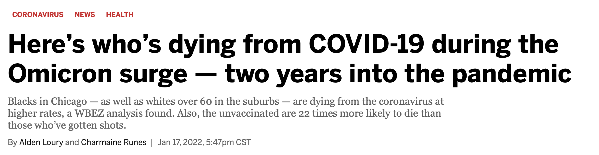
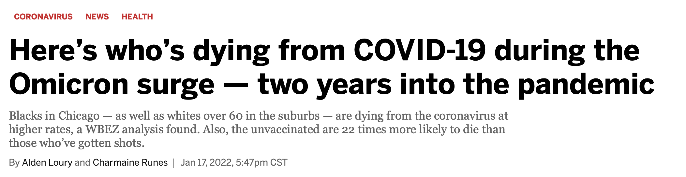
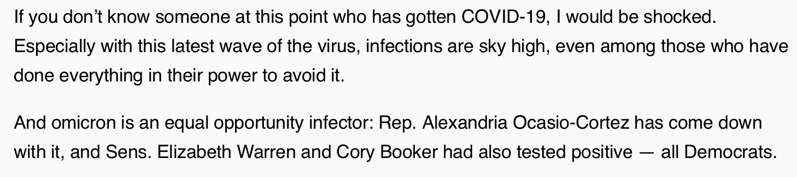
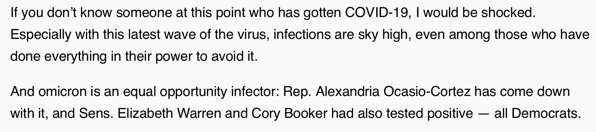

There are no equal opportunity infectors
Jon Zelner
10th Annual Conference to Increase Diversity in Mathematical Modeling and Public Health 1/21/2022


Modelers have been key to COVID-19 response

From Enserink and Kupferschmidt, Science 2020
Economic and racial inequity is a central story of the COVID-19 pandemic


 

So why were we not prepared for these easy-to-foresee inequities?
The myth of the equal opportunity infector may have obscured inequality
 
 

OK, but this was so obvious!

How did we miss this critical dimension of preparedness?
What could an alternative framework look like?